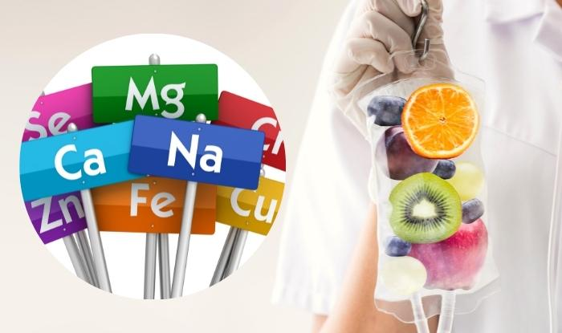
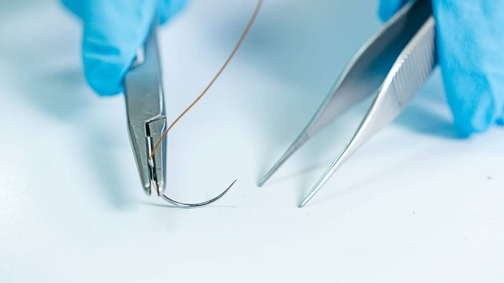

CONSULTA MEDICA GENERAL
Servicio médico domiciliario las 24 horas del día, los 7 días de la semana, en la comodidad de tu hogar, con la más alta calidad en la atención.
MISIÓN
“SU MEDICO EN CASA S.A.S.” es una organización de atención médica domiciliaria, consejo médico telefónico, asesoría psicológica y traslado ambulatorio de pacientes. Contamos con servicios especializados en atención de pacientes en la comodidad de su domicilio y a nivel pre-hospitalario, asegurando los mejores estándares de calidad, agilidad, oportunidad y confiabilidad, contribuyendo así al mejoramiento de las condiciones de salud de nuestros usuarios.
VISIÓN
“SU MEDICO EN CASA S.A.S.” es reconocida en el mercado como una de las empresas líderes en la prestación de servicio médico domiciliario, consejo médico telefónico, asesoría psicológica y traslado ambulatorio. Contamos con el mejor potencial humano, infraestructura, tecnología y mejoramiento continuo en el desempeño de los servicios que ofrecemos.
OBJETIVOS
Objetivo General:
Brindar durante 24 horas diarias consulta a domicilio en Medicina General y traslado ambulatorio de pacientes de forma personalizada y oportuna.
Objetivos Específicos:

Servicio médico domiciliario las 24 horas del día, los 7 días de la semana, en la comodidad de tu hogar, con la más alta calidad en la atención.

Terapeutas entrenados para brindarte el mejor servicio en la comodidad de tu hogar las 24 horas del día, los 7 días de la semana.

Tratamiento de diferentes enfermedades mediante medios físicos y mecánicos, mejorando la función musculoesquelética con profesionales capacitados.

Cuidados especializados para mejorar la calidad de vida de pacientes con enfermedades avanzadas, con un enfoque en la comodidad y el bienestar integral.

Apoyo psicológico para pacientes y familiares para enfrentar situaciones difíciles con profesionales especializados en salud mental.

Curaciones para heridas y otras lesiones menores, garantizando una recuperación adecuada y sin complicaciones.

Colocación de sueros vitaminados para mejorar tu salud y bienestar, proporcionados por profesionales capacitados.

Lavado de oídos para la eliminación de cerumen y otras impurezas, mejorando la salud auditiva.

Retiro seguro de suturas, asegurando una recuperación adecuada y sin complicaciones.

.
Dirección: Bogotá, Colombia
Teléfono: 3027125931
Correo electrónico: sumedicoencasajym@gmail.com
Para más información o para agendar una cita, no dude en contactarnos.